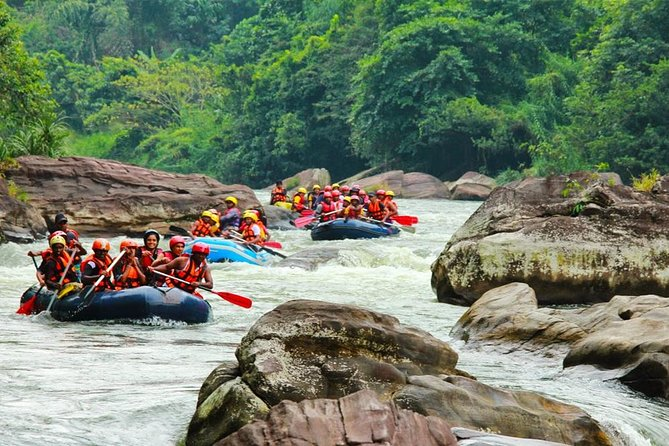

Sri Lanka is one of the best places for trekkers because of its different hills, forest regions, and distinctive temperature. Amidst all of this, you will be treated to stunning and breath-taking views of waterfalls, which further add to the trek's beauty. Follow Adam's Peak, Little Adam's Peak, and Ella Rock, Sigiriya and Pidurangala, Horton Plains and World End, and The Knuckles are some of the best areas for tracking in Sri Lanka. Hiking is best done between summer and fall, when the weather is warm.

Rafting is a recreational outdoor activity that involves navigating a river or other body of water on an inflatable raft. This is frequently done on whitewater or in varying degrees of roughness. Dealing with risk is a common element of the process. White Water Rafting is available on some of Sri Lanka's rivers for recreational activists and water sport enthusiasts. The most famous site in Sri Lanka to do so is the small town of Kitulgala in the hill region. The months of May through December are the finest for White Water Rafting at Kitulgala. During seasons of heavy rain, the river can become quite volatile, making White Water Rafting extremely dangerous. All water sports enthusiasts should follow the advice of the adventure operators on site. During the wet season, however, water levels could drop unexpectedly quickly, returning the river to its normal state. We spent Rs. 3000 apiece on rafting, trekking, and stream-sliding (which took approximately 3 hours), as well as lunch and tea (4 of us). However, if you want to stay at Ceylon Adventures, accomodation costs Rs. 3900 per person.
Sri Lanka is known for its surfing and boasts breaks ideal for all levels, so whether you're a seasoned surfer or haven't yet mastered standing on a board, you'll be in seventh heaven. Because of the seasonal patterns, when one coast is choppy, the other is calm, the country is a year-round resort. Surfing is available on the West Coast from November to the end of March. From April through the end of October, the East Coast of Sri Lanka will have the best surf conditions. In Sri Lanka, anyone can surf for free, however hotels, other cuisines, and accommodations must be paid for. There are some surfing schools in Sri Lanka where anyone can learn to surf as a beginner.
| Pass Types | Price | Extra Charges With Duration |
|---|---|---|
| Foreign Adult Pass | 5000 LKR |
For 3 hours - No charge For half day - 500 LKR For full day - 1000 LKR |
| Foreign Child Pass(3Years - 12years) | 2500 LKR |
For 3 hours - No charge For half day - 500 LKR For full day - 1000 LKR |
| Local Adult Pass | 1000 LKR |
For 3 hours - No charge For half day - 250 LKR For full day - 500 LKR |
| Local Child Pass(3Years - 12years) | 500 LKR |
For 3 hours - No charge For half day - 250 LKR For full day - 500 LKR |
| Anual Pass Foreign | 15000 LKR |
No Extra Charges |
| Anual Pass Local | 4500 LKR |
No Extra Charges |
Food Token(per pass) - 500 LKR Note: For children under age 3, entrance is free. |
||